Pintura acrílica mate de alto poder cubritivo. Lavable,
antihongos y de bajo olor. Ideal para livings y dormitorios.
Consultar
Sintético
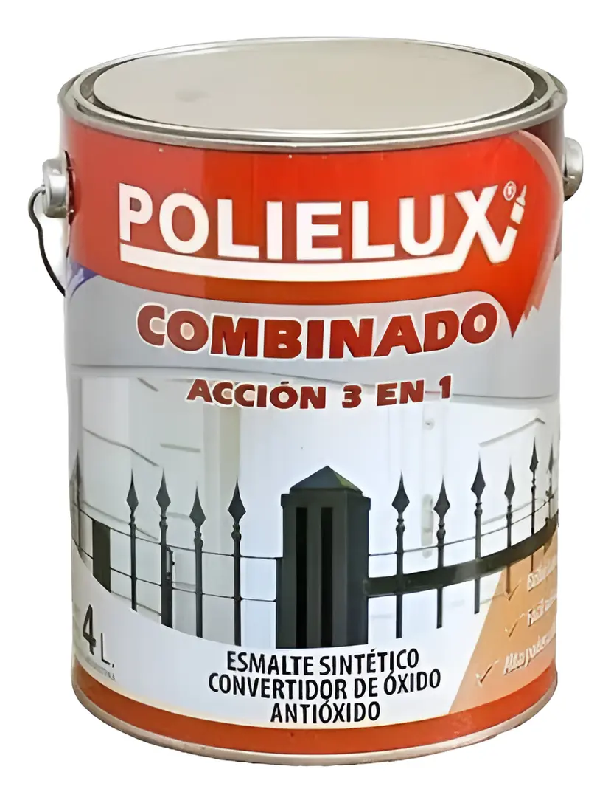
Polielux Esmalte Sintético Triple Acción
Combina convertidor de óxido, antióxido y esmalte en un solo producto. Evitá la necesidad de aplicar fondos previos, ahorrándote tiempo y costos de obra.
Consultar
Revestimiento
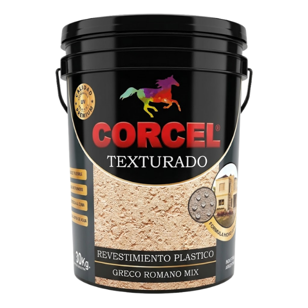
Corcel Revestimiento Plastico Texturado
Diseñado para proteger y decorar paredes tanto en interiores
como en frentes. Reemplaza el revoque fino y la pintura.
Consultar
Impermeabilizante
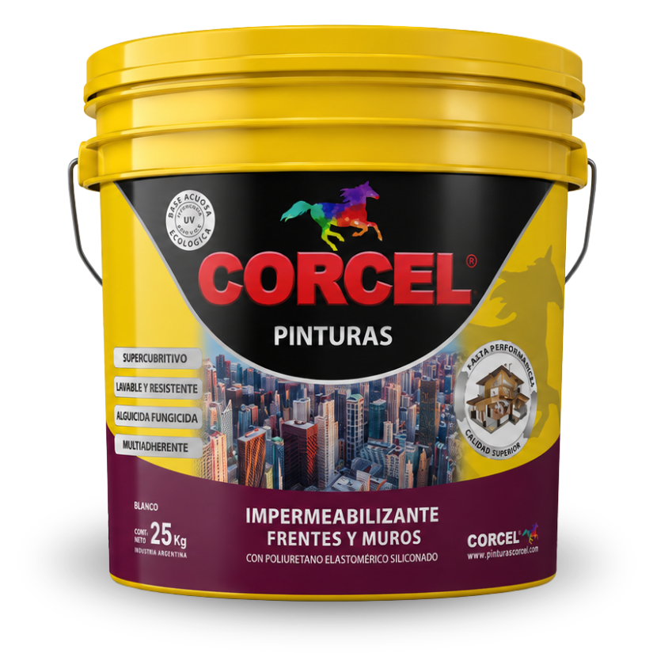
Corcel Impermeabilizante Frentes y Muros
Máxima resistencia climática, película elástica impermeable
que acompaña los movimientos estructurales evitando grietas.
Consultar
Maderas
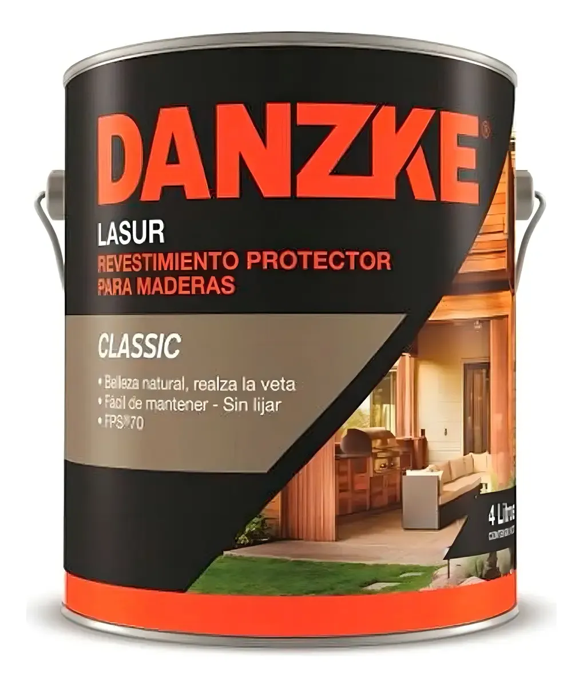
Petrilac Danzke Classic para Maderas
Protector para maderas de interiores y exteriores.
No se cuartea ni descascara, permitiendo que la madera respire
mientras repele el agua y frena los rayos UV.
Consultar
Látex
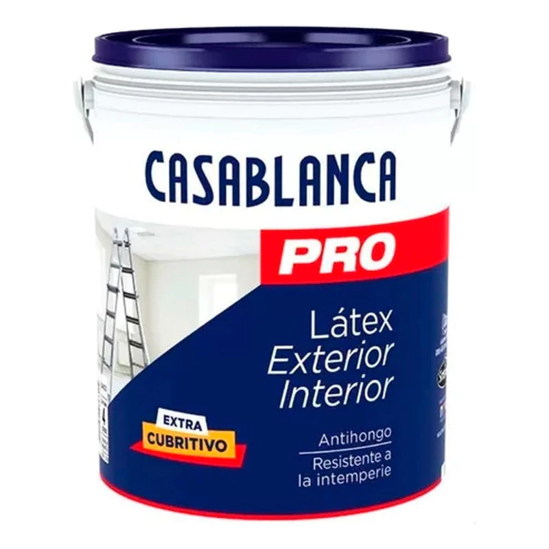
Casablanca PRO Látex Interior y Exterior
Látex acrílico de uso profesional diseñado para proteger y
decorar paredes. Ofrece gran poder cubritivo, acabado mate
y propiedades antihongos.
Consultar
Impermeabilizante
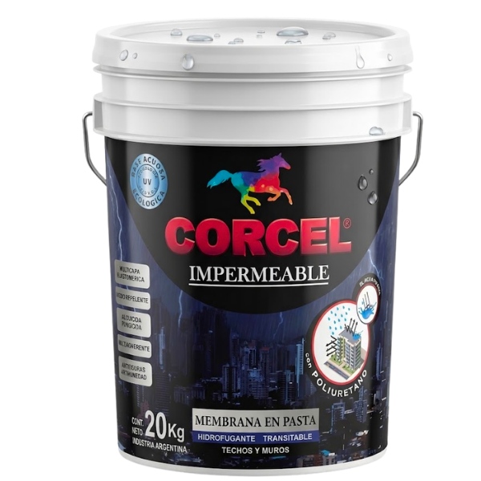
Corcel Membrana en Pasta Impermeable
Forma una barrera protectora contra filtraciones y humedad.
Ideal para techos y terrazas con alta exposición climática.
Mayor elasticidad, adherencia y resistencia.
Consultar
Ladrillos
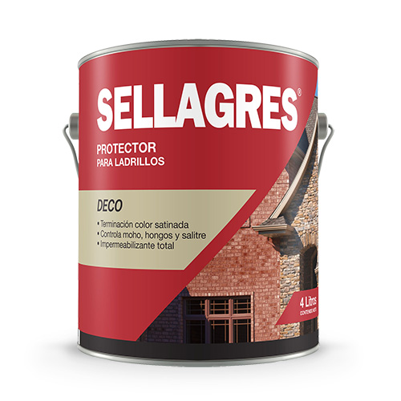
Petrilac Sellagres para Ladrillos
Protector al solvente con terminación satinada para ladrillos,
tejas y cerámicos. Se aplica con pincel en dos manos y protege
contra la humedad, los hongos y los rayos UV.
Consultar
Sintético
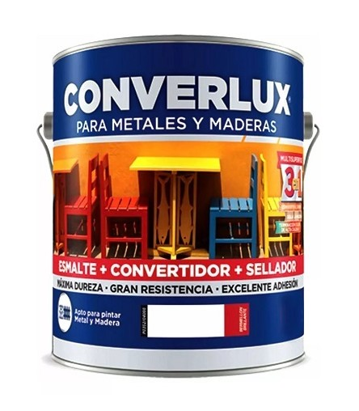
Converlux Esmalte Sintético Triple Acción
Funciona como esmalte, convertidor y antióxido en un solo paso. Protege y decora metales y maderas en la intemperie o en espacios bajo techo con una alta resistencia.
Consultar
Ladrillos
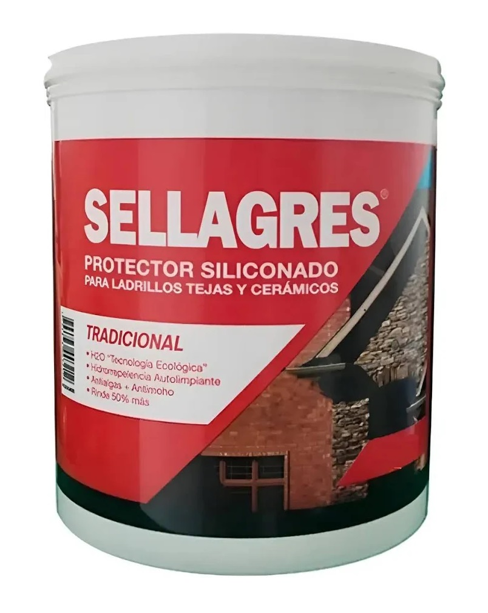
Petrilac Sellagres al Agua para Ladrillos
Protector siliconado al agua para ladrillos, tejas y cerámicos. No forma película superficial y repele el agua de lluvia.
Consultar
Impermeabilizante
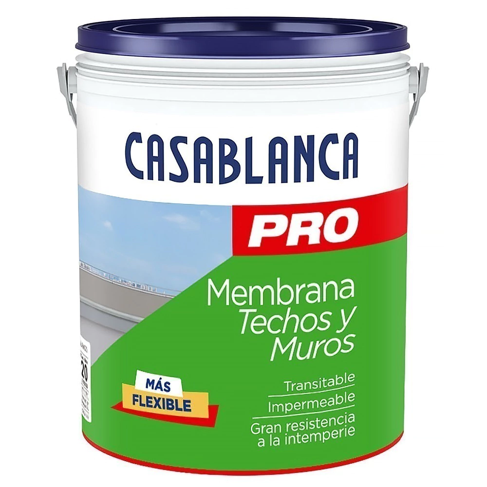
Casablanca Membrana Pro Techos y Muros
Recubrimiento elástico formulado con polímeros acrílicos, diseñado para proteger tanto cubiertas horizontales como fachadas verticales contra filtraciones de agua.
Consultar
Impermeabilizante
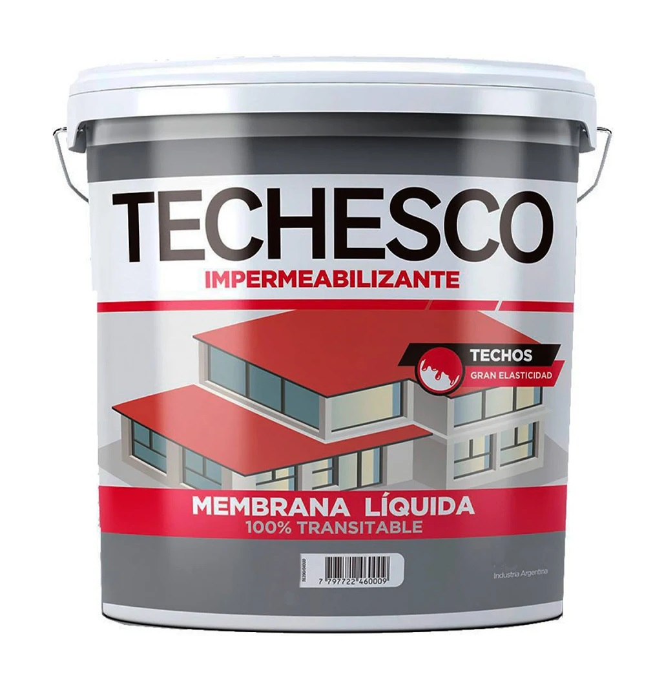
Techesco Membrana Liquida
Impermeabilizante acrílico para techos y terrazas exteriores diseñado para evitar filtraciones y resistir el tránsito peatonal moderado.